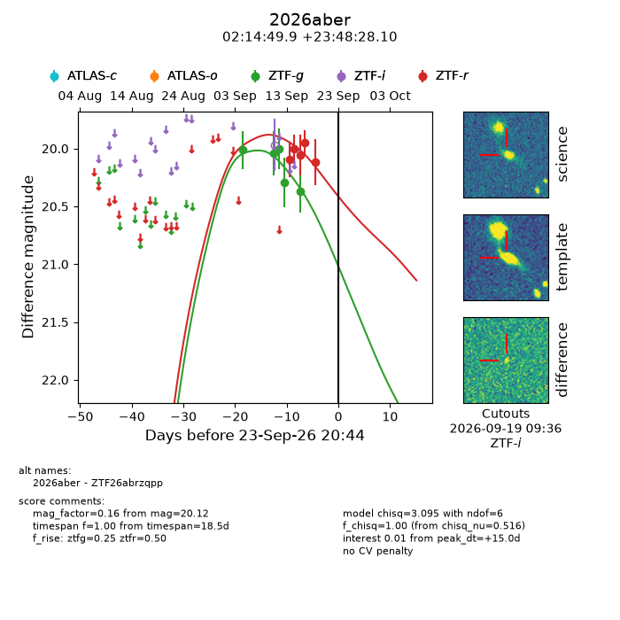
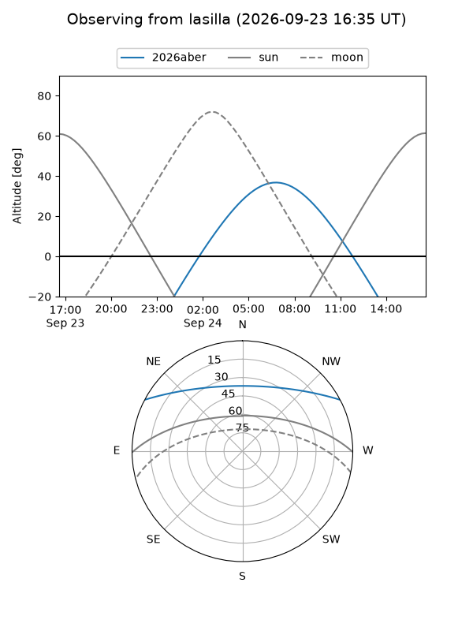
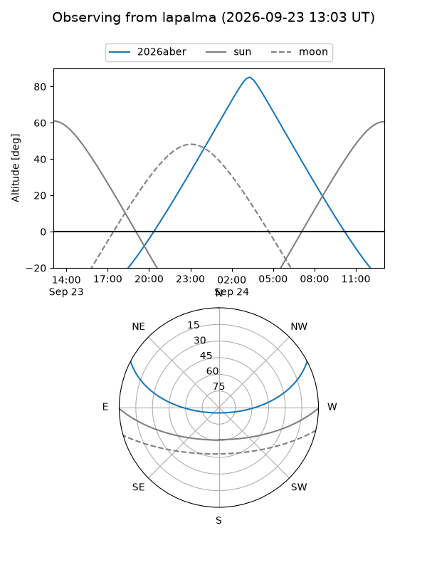
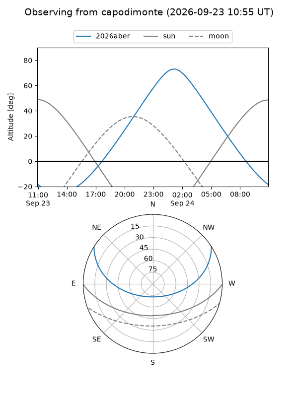
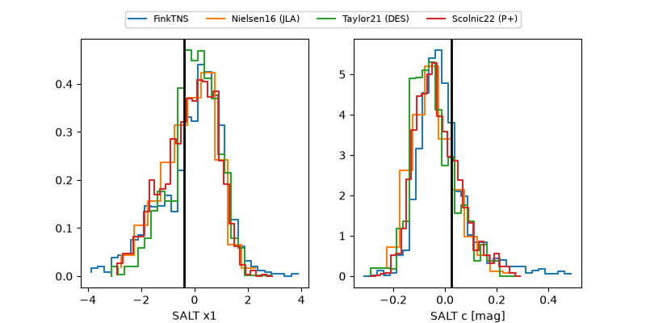

2026aber
Target 2026aber at 2026-09-23 20:46
Aliases and brokers:
FINK-ZTF: ztf.fink-portal.org/ZTF26abrzqpp
Lasair-ZTF: lasair-ztf.lsst.ac.uk/objects/ZTF26abrzqpp
ALeRCE-ZTF: alerce.online/object/ZTF26abrzqpp
YSE-PZ: ziggy.ucolick.org/yse/transient_detail/2026aber
TNS name: wis-tns.org/object/2026aber
Direct TNS query: direct search
alt names
ZTF26abrzqpp (ztf,fink_ztf)
2026aber (tns,yse)
Coordinates:
equatorial (ra, dec) = 33.7080,+23.80780
equatorial (HMS+DMS) = 02:14:49.92,+23:48:28.10
galactic (l, b) = (146.4244,-35.23096)
Flags:
TNS type: nan
peak dt: +15.0
Photometry:
last ztfg=20.37, ztfr=20.12
5 ztfg, 5 ztfr detections
Lightcurve

Visibility



Additional plots
